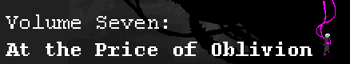

- Showtime (Piano Refrain) -- Sheet music by afterthought, MIDI by joethejrpgmaniac, lugiaa
- Harlequin -- Sheet music by AgentParsec -- Tabs by PlatinumW
- Showtime (Original Mix) -- MIDI by MrCheeze
- Sburban Jungle (Brief Mix) - Sheet music by Game Hunter
- Aggrieve (Violin Refrain) -- Sheet music by Danny Wolf
- Aggrieve -- Sheet music by Game Hunter
- Showtime (Imp Strife Mix) -- Sheet music by Resound
- Skies of Skaia -- Sheet music by Resound
- Upward Movement (Dave Owns) -- Sheet music by BRPXQZME -- MIDI optimized for quoting by JohnJRenns
- Explore -- Sheet music by Nocturne, Goatmon and Quaddy -- MIDI by Goatmon
- Gardener -- Sheet music by infinityMechanism, Putnam -- Tabs by lugiaa -- Recording by Putnam
- Guardian -- Sheet music by Danny Wolf -- MIDI by Danny Wolf
- Verdancy (Bassline) -- Tabs by FlamingTROUT, Rain
- Beatdown -- Sheet music by Game Hunter -- MIDI by MrCheeze -- Guitar tabs by temporallyRonin
- Chorale for Jaspers -- Sheet music by Zephyr, Havakazoo
- Pony Chorale -- Tabs by PlatinumW
- Three in the Morning -- Sheet music by Geekthras #1, Nocturne, Geekthras #2, Piano score by kurama101
- Knives and Ivory -- Sheet music by Nocturne
- Liquid Negrocity -- Sheet music by Nocturne, Game Hunter -- MIDI by Miff, MrCheeze
- Moonshine - Sheet music by Game Hunter, Sheet music by Kraethi
- Tall, Dark and Loathsome -- Sheet music by Nocturne
- Revelawesome -- MIDI by MrCheeze
- Carefree Victory -- Sheet music by Miff -- MIDI by calibore
- Endless Climb -- Sheet music by tetramaster -- MIDI by MrCheeze
- Sburban Jungle -- Sheet music by tetramaster, orngjce223, ardentComposer -- MIDI by MrCheeze -- Piano score for two pianos by Do the Musicy Thing
- Doctor -- Sheet music by FlamingTROUT, Geekthras -- MIDI by FlamingTROUT, by MrCheeze, Geekthras
- Atomyk Ebonpyre -- Sheet music by Game Hunter, Geekthras, BRPXQZME -- MIDI by MrCheeze, Radiation, Destradious -- Sheet music, MIDI, IT, and MuseScore format by Miff
- Black -- Sheet music by Game Hunter, Piano Arrangement by VeritasUnae
- Savior of the Waking World -- Sheet music by Game Hunter -- Piano score by min min, klug, Imgood -- French Horn score by silverseer -- MIDI by Qpmz234, Imgood -- Piano MIDI by min min
- Clockwork Melody -- Sheet music by Geekthras
- White - Piano Score by silverseer, Piano MIDI by silverseer
- Crystalanthemums -- Sheet music by satoru-13 (unfinished) and Purple1222119
- Skaia (Incipisphere Mix) -- Sheet music by almostsix
- Sarabande -- Sheet music by Jit #1, Jit #2, Arranged for string orchestra by MarimbaMaestoso (PDF, MIDI)
- Sunslammer -- Sheet music by Nocturne, invisibleForce (transcribed for readibility), lugiaa, VeritasUnae -- Tabs by Nocturne -- MIDI by Beatfox, lugiaa
- Lotus -- Sheet music by FlamingTROUT, Goatmon, infinityMechanism
- Ruins -- Sheet music by Jit, MIDI by Kieros
- Ectobiology -- MIDI by Putnam
- Crystamanthequins -- Sheets and MIDI by adamus
- The Beginning of Something Really Excellent -- Tabs by PaulPower
- Light -- Sheet music (Flute) by Jit, MIDI by Dohmb
- Candles and Clockwork -- Sheet Music by VeritasUnae, MIDI by Seppuku
- Descend -- Piano score by Kurama101 -- MIDI by zeliriousKvetch (unfinished), garret866, Piano MIDI by Imbrog
- Homestuck -- Sheet music by Miff (based on Homestuck Anthem) -- MIDI by Miff
- Crustacean -- Sheet music by Nocturne -- Concert Band arrangement by Jay Furor (all parts/separate parts)
- Showdown -- Sheet music by Game Hunter -- MIDI by MrCheeze
- psych0ruins -- Sheet music by Game Hunter
- Walls Covered In Blood -- Sheet music by Dudemaster47 (partial)
- The La2t Frontiier -- Sheet music by Game Hunter
- The Thirteenth Hour -- Sheet music by Game Hunter
- Spider's Claw -- Sheet music by Game Hunter, Nocturne -- MIDI by MrCheeze -- Tabs by Nocturne (guitar/bass)
- Keepers -- Sheet music by <anonymous> -- MIDI by Radiation
- Theme -- Sheet music by Game Hunter
- Skaian Summoning -- Partial MIDI by unknown

- Swing of the Clock -- Sheet music by almostsix
- Chartreuse Rewind -- Sheet music by almostsix
- The Broken Clock -- Sheet music by Nocturne -- MIDI by Miff
- Omelette Sandwich -- Sheet music by Game Hunter
- Temporal Piano -- Sheet music by Game Hunter, Jit (chords)
- Baroqueback Bowtier (Scratch's Lament) -- Sheet music by Kyntello, Viola score by candidcondescension
- Scratch -- Arrangement for solo organ by Imbrog
- Time Paradox -- Sheet music by EidolonOrpheus
- Eldritch -- Sheet music by almostsix
- English -- Sheet music by almostsix, MIDI by seekercat
- Pachelbel's Gardener -- Sheet music by Game Hunter
- Land of Light and Cheer -- Sheet music by Game Hunter -- MIDI by Pokahs
- Candles and Merry Gentlemen-- Sheet music by Game Hunter
- Frost -- Sheet music by almostsix
- Umbral Ultimatum -- Sheet music by Imbrog, MIDI by Destradious
- GameBro (Original 1990 Mix) -- Sheet music by Nocturne, Game Hunter (organ solo)
- MeGaLoVania -- Sheet music by satoru-13, Game Hunter -- Tabs by Tensei, struttingMushie, MIDI by MrCheeze
- Walk-Stab-Walk (R&E) -- Sheet music by Nocturne (unfinished)
- Elevatorstuck -- Flute Score by Optimatum, PDF by lugiaa, MIDIs by lugiaa (Piano, Full), Synthesia tutorial by lugiaa
- Three in the Morning (Pianokind) -- Score by Galactides
- Stormspirit -- Sheet music by Clawtooth
- Heir Conditioning -- Sheet music by Danny Wolf -- Tabs by Tensei (guitar/bass)
- Dance of Thorns -- Sheet music by Moondelev #1, Moondelev #2 -- Violin transcription by Clawtooth -- MIDI by Moondelev, Tensei
- Time On My Side -- Sheet music by Purple1222119 -- Piano score by Purple1222119 -- MIDI by Purple1222119
- Atomic Bonsai -- MIDI by Tensei
- Make a Wish -- Tabs by mediokreKarapase, ebullentMusician
- Karkat's Theme -- Flute score by Midnight.Gem Piano Score by Purple1222119 -- Duet scores by avelynchii (violins/violas/cellos) -- MIDI by garret866
- Trollcops -- Sheet music by Jit, Zelthra -- MIDI by Zelthra
- Dreamers and The Dead -- Sheet music by EidolonOrpheus -- Flute Score by EidolonOrpheus
- Terezi's Theme -- Sheet music by Resound -- Piano solo by Moondelev
- BL1ND JUST1C3: 1NV3ST1G4T1ON!! -- Sheet music by Sky Island -- MIDI by Sky Island
- Darling Kanaya -- Sheet music by pianoScientist
- Eridan's Theme -- Sheet music by Dudemaster47 -- Guitar chords by mediokreKarapase -- Clarinet Score Musicrockz0623 (external [non-forum] user) -- MIDI by Radiation
- Rex Duodecim Angelus -- King's Theme transcribed by Doowhacker, Moondelev -- Rough MIDI by DragonXVI -- piano score by Do The Musicy Thing
- Alternia -- Sheet music by Geekthras (piano only), BRPXQZME -- MIDI by Beatfox
- The Blind Prophet -- Violin Score by silverseer
- Heat -- Violin Transcription by Liliumus
- Dawn of Man -- Chords by mediokreKarapase, Kal-la-kal-la
- No Release -- Chords by mediokreKarapase
- Fly - Chords by Chaoszerom
- Pumpkin Tide -- Chords by mediokreKarapase

- Black Rose, Green Sun -- Sheet Music by Quaddy, Piano Arrangement by Quaddy
- At the Price of Oblivion -- Partial transcription by gallowsCaliibrator, arachnidCalibrator
- Even In Death -- Piano score by Purple1222119 -- Violin score by Caustic
- Play the Wind -- Sheet Music by Kyntello
- Warhammer of Zillyhoo -- Gregorian notation by BRPXQZME -- Modernized notation by Diminuitive Calvin
- Spider8reath -- MIDI by Tensei
- Eden -- Starting bars by Seppuku (more sensible than official)
- To get the rest.... BUY THE ALBOM???
- Center of Brilliance -- Sheet Music and MIDI by infinityMechanism
- Derse Dreamers -- Violin Sheet Music by Liliumus -- Sheets and MIDI by adamus
- Core of Darkness -- Sheets and MIDI by Caustic -- MIDI by zerliriousKvetch
- Calamity -- MIDI by intentionallyIncohesive
- Do You Remem8er Me -- Piano score by Quaddy -- Rough chords by Implode -- MIDI by Kyntello
- Flare -- Sheet music by Geekthras, Nocturne -- Cascade Version Score by Makogeddon
- Serenade -- Piano score (with additional themes) by Do the Musicy Thing
- Frog Forager -- Piano score by Purple1222119
- Davesprite -- Piano score by Purple1222119
- Unite Synchronization -- Sheets and MIDI by adamus -- Arrangment for Marching Band by Saxophlutist -- Woodwinds MIDI by accanaceousCouncillor -- Piano score by Do The Musicy Thing
- The Lost Child -- Piano MIDI by Makogeddon
- Hussie Hunt -- Clarinet part by Kyntello
- Havoc -- Sheet music by Caustic -- MIDI by Caustic
- Infinity Mechanism -- Sheet Music by Purple1222119 -- Piano score by Purple1222119 -- MIDI by Purple1222119
- Cascade -- Piano transcription by Purple1222119 -- Drumline by TheLoveableTramp (unfinished) -- Tabs by Danny Wolf -- MIDI by Purple1222119, LeQha
- I'm a Member of the Midnight Crew (Acapella) -- Sheet Music for Barbershop Quartet by David Ko
- Black Hole, Green Sun -- Violin Solo by SilentKnightXIII -- Guitar Solo by lugiaa
- Song of Skaia -- Vocals by MuzikalNotes
- Gold Pilot - Sheet music by silverseer -- Sheet music by Do The Musicy Thing
- Iron Infidel -- Sheet music by mayorails -- Guitar chords by mediokreKarapase
- Purple Tyrant -- Sheet music by PiGuy17 , kurama101-- MIDI by Makogeddon
- Olive Rogue -- Electric bass chords by Dontrush
- Cobalt Thief -- Sheet music by Superpig -- MIDI by TheLoveableTramp
- Purple Bard -- MIDI by Gec
- Violet Prince -- Sheet music by Bob Franklin (unfinished)
- Temporal Shenanigans -- Guitar chords by mediokreKarapase
- Green Ghost -- Sheet music by adamus -- MIDI by adamus
- Blue Atom -- Sheet music by Dontrush,OI3L1V1OUS -- Alto Sax Score by Ducksual
- Cyan Beast -- Chords by Ducksual
- Emerald Terror -- Sheet music by Phantasmicka
- Do The Windy Thing -- Sheet music by kurama101
- Ohgodcat -- Sheet music by adamus -- MIDI by Gec
- The Vast Glub -- Sheets and MIDI by adamus
- Clockstopper -- gp5 by temporallyRonin -- MIDI by temporallyRonin
- Dord Waltz -- MIDI and Sheets by adamus
- Crystalmethequins -- Piano score by Do The Musicy Thing
- Whistling Jackhammer -- Sheets and MIDI by dcheng334
- Pumpkin Party in Sea Hitler's Water Apocalypse -- Sheet music by Caustic -- MIDI by Caustic
- Another Jungle -- Flash Version Score by Purple1222119 -- Flash Version MIDI by Purple1222119
- A Little Fight Mewsic -- Piano Score by silverseer -- Piano MIDI by silverseer
- Austin, Atlantis -- Piano Score by silverseer -- Piano MIDI by silverseer
- Despot - Score and MIDI by adamus
- Three In The Morning (Aftermath) -- Sheet music by audiostoryShort, Kraethi
- Sweet Dreams, Timaeus -- Piano Score by silverseer -- Piano MIDI by silverseer
- Red Miles -- Score by Purple1222119
- Princess of Helium -- Score by audiostoryShort -- MIDI by Zadira
- Moonsetter -- Sheet music by VeritasUnae, Zikkled, kurama101 (piano score), infinityMechanism (piano with viola score), renaissanceLibrarian (viola section of infinityMechanism's score transposed into treble clef) -- MIDI by Zadira -- Piano score by Do The Musicy Thing
- Candles and Clockwork (Alpha Version) -- Score by candidcondescension
- Noirscape -- Guitar tabs by Ducksual
- Stargaze -- Sheets and MIDI by adamus
- A Taste for Adventure -- piano score by Do The Musicy Thing
- October -- MIDI by Jit, LeQha, Score by OI3L1V1OUS
- Underfoot -- Score by Jit
- Game Over -- Piano score by Sir Real
- Unlabeled -- Score by Jit, MIDI by i300
- The Scratch -- Piano section by Jit
- Mother (bonus) -- Piano score by Jit, kurama101 -- MIDI by i300
- Under The Hat (bonus) -- Piano score by Jit -- MIDI by i300
- Resurrection -- Logic Pro X project file by Avinoch -- MIDI by Avinoch (prepared by ViKomprenas)
- Heir of Grief -- piano score by Do The Musicy Thing, Kieran Romer, Guitar tabs by /u/euniversecat
- THIS Pumpkin -- MIDI by Alexander Rosetti
- Jungle #3 -- MIDI by cookiefonster
- Tock -- MIDI by unknown
- CONFERANCE CALL ~~LAST CONTACT~~ -- MIDI by JohnJRenns(?)
- How Do I Live (original) -- Sheet music by Richard Bradley
- Homestuck (medley) -- Sheet music by CoolioJazz
- Aggrieve Piano (Brief Mix) -- Sheet music by Game Hunter
- Doctoral Thesis -- Sheet music by Game Hunter
- I'm a Member of the Midnight Crew -- Sheet music by BRPXQZME (piano chords/revamped, Lilypond file & MIDI), Nocturne (original sheet music), MichealRein
- House of Lalonde -- MIDI, Violin, & Piano score by Imbrog
- Anbroids - MIDI by Kyntello
- Problem Sleuth Theme - MIDI and Sheets by adamus (swing rhythm notes here) -- sheets by infinityMechanism
- Sweet Bro and Hella Jeff the Moive -- MIDI by Makogeddon
- SWEET BRO AND HELLA JEEFF SHOW! -- Piano Score by Purple1222119
- Growing Up -- MIDI (Crystamanthequins section) by Caustic, lugiaa
- Growin' Up Strider -- MIDI by Caustic
- Farewell -- Piano Score by Purple1222119
- Various Songs from Homestuck for the Holidays [UNOFFICIAL ALBUM] -- Sheet Music by Game Hunter
- Eridan's United States of Wwhatevver -- Tabs by TheifofTruth